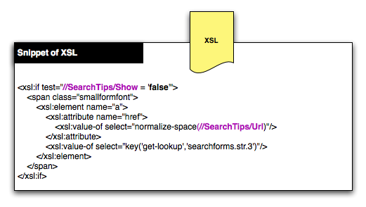

Next: User Interface Customization
This document describes the key aspects of DLXS User Interface technology. It is intended as a fairly high level overview. It applies to DLXS Image, Text, and FindAid Classes, but not Bib Class which lags behind in support for XML and XSL.
The DLXS Classes are CGI based web applications written using the Perl programming language. The CGIs operate between the web server and the data, and are also known as middleware. The middleware is designed to keep data handling tasks separate from user interface tasks as much as possible. The combination of Perl programming code, XML, and XSLT help to achieve this. Each page served is created by generating an XML data document and transforming it using XSLT to HTML for display in the browser.
It is beyond the scope of this documentation to teach the fundamentals of Perl, XML, XSLT and HTML. You may find you can comprehend most of this documentation even if you are not very familiar with some of the technologies. We will start with a high level view, increasing the complexity as we go.
The diagram below illustrates how a CGI takes an XML template, populates it with data, and transforms it to HTML using an XSL stylesheet.
An XML template exists for every page in the DLXS system. An XML template is an XML file that contains placeholders, called Processing Instructions. It is the starting point for what will be an XML document full of dynamically generated data.
Templates vary depending on the purpose of the page. A search form page has different requirements that a search results page, and the templates reflect this.
Take a look at this complete XML template (Not all browsers can display XML. Try Firefox.). It is for a search form page in Text Class.
The CGI produces an XML document as a result of replacing a templates Processing Instructions. The XML contains all of the data to be displayed in the browser, however, the it lacks the formatting instructions needed by the browser to display an attractive and functional user interface.
Take a look at this XML document. It is the template above after having the PIs replaced by the CGI.
XML documents used in the user interface are totally different than the XML documents that hold content such as the full text of a book or an electronic Finding Aid, though portions of content will replace PIs in the XML for search results page. If you want to know more about preparing data as XML, see Data Issues for DLXS.
Processing Instructions or PIs are replaced by the CGI with dynamically generated data such as search results, and information used to construct menus, forms and links in the user interface. Every Processing Instruction is paired with a handler in the CGI for replacing the PI with data or other information.
<?PI_IDENTIFIER_NAME [modifiername="value"]*?>
Above you can see the generic form of a Processing Instruction. PIs can optionally have modifiers, though most do not. Modifiers pass additional information to the CGI, affecting the replacement.
Processing Instructions are usually wrapped by XML tags for structure and context. Some PIs get replaced by small amounts of data, such as the word "true" or "false", while others are replaced by large amounts of data, sometimes containing additional XML tags.
The diagram below shows a snippet of the XML template.
Next you see the snippet of the XML after Processing Instructions have been replacedby the CGI.

XSL is the programming language used to transform the XML to HTML. An XSL program is more commonly called an XSL Stylesheet. Each XML file specifies the XSL Stylesheet to be used for transformation. It is common in DLXS for one stylesheet to incorporate several other stylesheets stored in separate files (for the convenience of sharing code). More on this later.
Take a look at this XSL Stylesheet. It is one of the stylesheets used to transform XML to HTML for the search form page in Text Class. You might notice that XSL resembles XML. In fact, it is XML. XML takes on many different forms, one is XSL. You might also notice that an XSL stylesheet contains XSL templates. An XSL template is a little bit like a subroutine or function in other programming languages, and are not to be confused with XML templates.
The diagram below shows the snippet of XSL that transforms the XML above to HTML.

HTML is the format output by the CGI to the browser. It is the result of applying the XSL Stylesheet to the XML.
Take a look at this HTML. It is the complete HTML source for the Text Class search form.
The diagram below shows the snippet of HTML generated by transforming the XML with XSL.
All text that appears as part of the user interface is stored in an XML file. Phrases are assigned keys, and the keys are used in the XSL to retrieve phrases. The potential exists to have interfaces in different languages. A default map resides in the web directory for each Class and is called langmap.en.xml. The CGI incorporates the map file into the XML file.
Javascript is another key technology that plays a role in the user interface. Like CSS, Javascript is applied by the browser, not the server.
DLXS uses CSS extensively to further refine the layout of the HTML. Cascading Stylesheets are very different from XSL Stylesheets. XSL Stylesheets affect the structure of the HTML document (e.g., the hierarchy of the elements). Cascading Stylesheets affect the display of the HTML structure. CSS is great for formatting with fonts and colors, and it can even be used to show or hide a portion of the HTML. CSS is applied by the browser, not the server.
Some of the most common customizations can be done in Collection Manager. For example, the title of the collection. Image Class can be customized quite extensively in Collection Manager. For example, the display of data fields can be configured extensively. Customizations are relatively easy to make in Collection Manager. Use it whenever possible.
Fallback is a mechanism used by DLXS CGIs to handle the task of selecting user interface files (e.g., XML templates) based on whether the end user is working at the class, group, or collection level, and whether user interface customizations have been made.
DLXS allows collection specific user interface customizations. Similarly, groups of collections can share a custom interface. The DLXS Classes each have a default interface that is used if there are no customizations at the group or collection levels.
When the CGI needs a user interface file, for example, search.xml for the text class search form, the Fallback mechanism considers a number of factors when choosing a file.
Fallback is complex due to the vast number possible situations, but has great benefits. It allows very specific aspects of the user interface to be customized while all other aspects fall back to the defaults at the group or class level. This reduces duplication and in the long term minimimizes maintenance work (and the headaches that go with it).
The principle idea is to duplicate code as little as possible, and utilize fallback as much as possible.
All user interface files are stored in the file system under $DLXSROOT/web.
There is a directory for files shared across the classes called "lib" and located at $DLXSROOT/web/lib.
Each class has a directory in "web".
If a group or collection requires customization, it may be necessary to create a web directory based on the group or collection ID.
You can see a report of the Fallback file selection process by adding debug=tpl to the URL. The CGI first checks for a file in the collection level directory, then group, and finally at the class level.